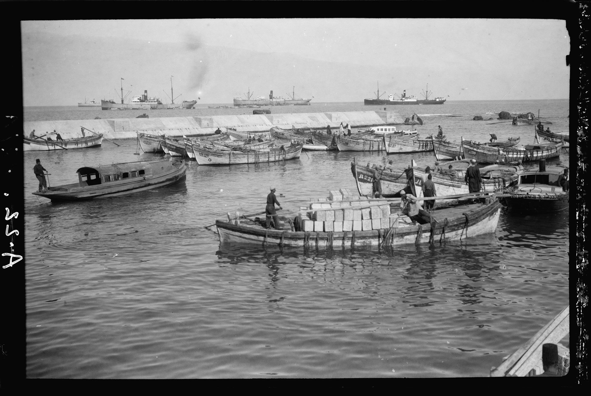
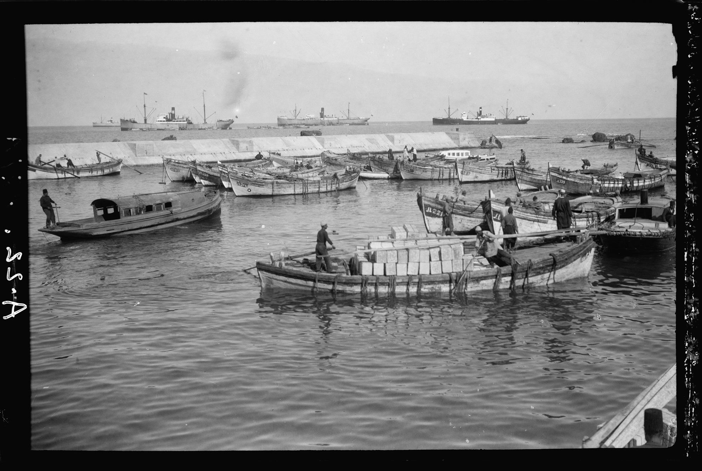

Beneath the surface of every manicured lawn and wild meadow lies a complex, unseen tapestry of history, geology, and ecology. This project seeks to unveil these hidden layers, showing how a sense of place is deeply rooted in the very ground we walk on. It’s a journey that moves from the vast, abstract scale of continental drift down to the microbial life in a handful of soil.
We begin by grounding ourselves in the present—a familiar image of a garden, a starting point for our exploration.
But the true narrative unfolds only when we learn to look deeper, allowing the environment's history to shape our perception.

The journey from the immediate garden to the distant past begins with the foundation of the earth itself. Our garden soil is merely the endpoint of a millennia-long process of rock formation, weathering, and deposition. The very minerals that nourish a tiny root can be traced back to violent volcanic eruptions or the slow compression of ancient seabeds.
Understanding this scale gives the garden a gravity it didn't possess before. It’s not just a patch of dirt; it's a geological monument in motion.
The image shifts from the concrete world of plants to the abstract realm of geology, showing the vast forces at play.


 

Every element in the garden, from the deepest taproot to the highest leaf, participates in relentless cycles of decomposition and renewal. The water cycle, the carbon cycle, and the nutrient cycle are not abstract concepts but tangible processes visible in every drop of dew and wilted petal.
As we scroll, the sequence of images shows this dynamic state: the vivid color of growth fades into the muted tones of decay, which then gives way to the promise of new life. It's a non-linear, constant process of change.
The five images cross-fade smoothly, each holding its own moment in time yet flowing into the next to illustrate the constant flux.

The transition from the grand scale of continents to the microscopic scale of soil is abrupt and profound. A single teaspoon of healthy soil contains more living organisms than there are people on Earth. Bacteria, fungi, nematodes, and arthropods work in concert to create a vibrant, living ecosystem.
This section zooms the user into this hidden world. The image of the soil expands, becoming overwhelming in its detail and density, forcing a contemplation of the life hidden beneath our feet.

The life above ground is equally interconnected, defined by relationships that plants and animals have forged over millennia. Pollination is the most visible of these symbiotic partnerships, but others are less obvious, such as the relationship between native birds and seed dispersal, or the pest control provided by local insects.
The image here highlights the essential role of a pollinator, a perfect and small-scale example of biodiversity's critical function.

A garden is not a static environment but one constantly under pressure from the shifting reality of climate change. Rising temperatures, erratic rainfall, and new pest pressures demand that our approach to horticulture must adapt. The design must be resilient, favoring native and climate-appropriate species that require less intervention.
This image uses data visualization to show the abstract, global threat of climate change interacting directly with the familiar landscape of the garden.


With environmental reality in mind, a new aesthetic emerges: one defined by efficiency, sustainability, and harmony with the local ecosystem. The beauty of this garden is in its resilience, its functionality, and its authentic reflection of the surrounding ecology. The wild, the native, and the sustainable become the new markers of sophisticated design.
This series of images shows practical examples of **sustainable garden design**: water conservation, responsible material use, and selection of local species.
The central position of the images suggests these principles should be at the heart of any new project.

While we emphasize the natural and ecological, we must also acknowledge the essential role of human intention. A garden, by definition, is a cultivated space—a collaboration between nature’s forces and a gardener's guiding hand. It is the practice of observation, patience, and a deep respect for the materials at hand.
This final full-bleed image grounds the abstract concepts back into the simple, physical act of gardening, reminding the viewer that every great landscape begins with a single, mindful action.

The principles of ecological design extend beyond the individual property line and into the community. Shared green spaces, local sourcing of materials, and neighborhood biodiversity initiatives create a collective sense of stewardship. A truly successful garden enhances the ecological health of its entire surrounding area, benefiting everyone.


A "sense of place" is infinitely varied, shaped by climate, culture, and history. From the ancient olive groves of the Mediterranean to the moss gardens of Japan, human endeavor has found countless ways to express itself through nature. These landscapes—vast or small—are all deeply rooted in their specific ecological and cultural contexts.
This sequence of six images provides a quick, fluid tour through diverse global gardens, emphasizing the universal truth that local knowledge and natural conditions dictate the best design.

A garden is a source of nourishment, not only for the body but for the mind. The ultimate reward of ecological gardening is the sense of connection, the knowledge that you are producing life in a way that is regenerative and locally authentic. The harvest is not just the food; it is the realization of a complete, sustainable cycle.

Stepping back, the landscape re-emerges as a unified whole. The forces of geology, the microscopic activity of the soil, the cycles of growth and decay, and the intentional human hand are all working together. The garden becomes a microcosm of the entire world's ecological processes, perfectly balanced and perpetually in motion.

The angle of the sun, the presence of shade, and the amount of light that reaches the ground are local, unchangeable facts that dictate a garden's microclimate and thus the life it supports. The most critical lesson in ecological design is to work with the natural light conditions, not against them, planting the right plant in the right place.

Just as light is essential, so too is shadow. The shade cast by structures and trees creates cool, moist zones that foster different types of life and offer essential respite. The shadows define space, highlight texture, and remind us that a healthy garden must encompass a full range of microclimates to support maximum biodiversity.

The journey is complete. We return to a single, evocative image. It's a place. It's an ecosystem. It's an act of deep history and mindful co-creation. The garden is now understood not just for what it is, but for the unseen forces and histories that made it so.
The ultimate goal of design is not to impose, but to reveal the innate **Gardenicity** of a place.